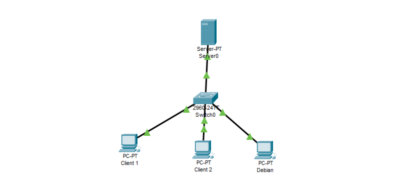
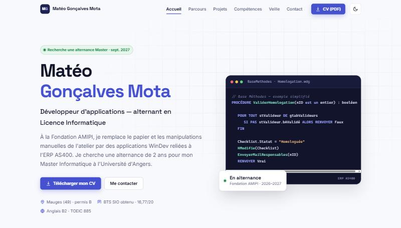

Alternance · AMIPI2026–27
Base Méthodes
Checklists des moyens de production numériques, validation par 5 responsables, e-mails automatiques et historique.
Projets
Des applications réalisées en entreprise et pendant le BTS SIO, souvent en équipe. Pour chacune : le besoin, mon rôle exact, les choix techniques et ce que j'en ai appris.
Alternance · AMIPI2026–27
Checklists des moyens de production numériques, validation par 5 responsables, e-mails automatiques et historique.
Alternance · AMIPI2026–27
Une interface qui remplace des commandes saisies à la main : l'impression devient rapide et accessible à tous.

BTS · équipe de 45 mois
App Android pour les soigneurs, back-office web et API REST Symfony 7 pour tracer chaque repas d'un parc animalier.

BTS · équipe de 42 mois
Application web sécurisée pour gérer clubs, licenciés, inscriptions, dossards et résultats des compétitions.

BTS · équipe3 mois
Plateforme de réservation d'emplacements pour exposants, avec plan interactif et tableau de bord organisateur.

BTS · équipe de 31 mois
Informatisation de la gestion des leçons, des moniteurs et des véhicules d'une auto-école.
BTS · client réel2024–25
Site vitrine pour une entreprise réelle, réalisé en groupe de 4 : thème, contenus, SEO et responsive.

BTS2 mois
Domaine Active Directory, serveur web Debian, segmentation VLAN et services DNS/DHCP.

PersonnelEn continu
Site statique codé à la main : accessible, thème clair/sombre, rapide et sans dépendance.
Recrutement
Je peux vous le présenter plus en détail, code et démarche compris. Je recherche une alternance Master de 2 ans dès septembre 2027.